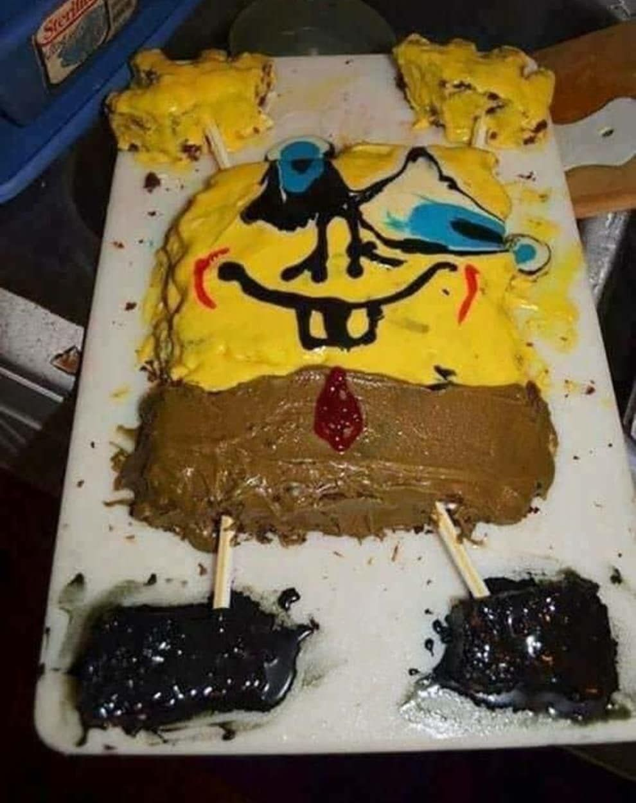
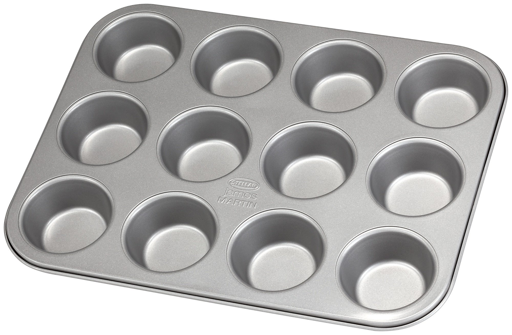
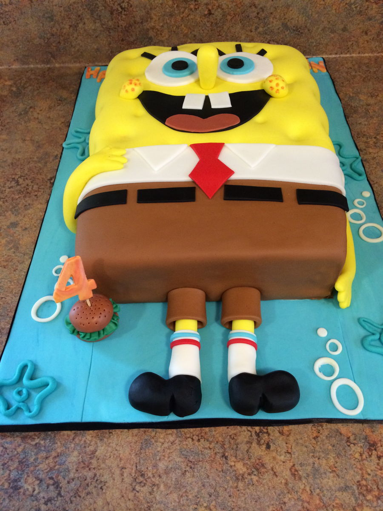

(or “How to Bake the Perfect Cake”)
Programming Note…
School starts next week, so this will be my final post planned for Summer of Stats.
I’ve been looking forward to covering this topic (Design of Experiments) ever since I started this project, and it is one of the things I most look forward to studying. I hope you enjoy.
And Now Back to Our Topic!
Actions lead to consequences - most people appreciate this fact.
“I wonder what will happen if I push this rock…”
However, many things in life aren’t as straightforward as a falling rock.
For example, if we open up a new assembly line and we see product defects increase, was it changes to process, the new machines, or something else that caused these issues?
Our normal first instinct would be to collect some data and analyze it… but exactly what data SHOULD we collect to answer a question like this?
That is the topic of today’s post: design of experiments.
What is Design of Experiments?
Design of experiments is an approach that helps ensure we collect the right data to answer our questions. We do this by thoughtfully constructing a set of conditions to probe the impact of each variable (an experimental design).
To see how we would do this, let’s go through an example…
Developing a Product
Let’s say we’re trying to maximize the strength of a new epoxy our company is developing. We can control the following 2 conditions:
- The temperature we run the process at
- The intensity of light we expose the epoxy to
By hitting right combination of these two variables, we’ll end up with the strongest possible product.
In many ways, this search process looks a bit like playing Battleship - we know that there is an ideal target that we want to hit, we just don’t know exactly where it is.

However, there’s a critical difference with our experiment - our results can give us “hints” about where the best spot likely is.
Hitting the Target (Using Experimental Design)
In essence, our game of Battleship turns into a game of Hot or Cold:

And since we have these hints, it no longer makes sense to just blast away randomly, hoping our product improves. We can use experimental design to methodically hone in on our target.
A Simple 2x2 Design
Given 2 variables (Temperature, Light), the simplest way to design our experiment is in the shape of a “box” (ie. a 2x2 matrix).
We set up conditions so that we have both HIGH and LOW levels of both Temperature and Light and run 4 tests, collecting results for each:
Experiment #1

Since our best result (1.5) came after increasing both Temperature and Light Intensity, we can now do a second set of experiments at an even higher setting, to see if results continue to improve.
Experiment #2
We now increase the temperature and light settings, and conduct our 2nd round of experiments:

This time, once we raised temperature & light intensity past a certain point, we saw the epoxy strength start to decline. Most likely, we don’t need to keep increasing our settings any more.
As a result, we decide to wrap up this round of experiments.
Final Results
Using just 2 sets of well-designed experiments, we’ve successfully improved our epoxy strength. And, since we were methodical, we’re reasonably confident that our result is close to the optimal setting.

If we decide later to refine our settings to further improve our product, our data tells us precisely where to look next.
Design of Experiments in Daily Life
One practical lesson of design of experiments that you can take away is:
Do smaller experiments, and do more of them.
As we’ll see below, by taking small steps, we can quickly make improvements.
It’s 6pm, on a Thursday….
You’re in a tizzy. Your child’s birthday is this weekend, and there’s no cake. Out of the blue, the bakery cancelled your order. It’s now up to you to bake the cake.
And your first attempt was a disaster.

“Let’s agree to never talk about this to anyone”
Because you only have 2 days, we want to figure things out with as few trials as possible. This is a great candidate for a designed experiment!
Let’s Experiment!
Baking has TONS of variables - we can vary the temperature, cooking time, relative amount of each ingredient, how much we stir it, the pan we bake in, and on & on….that’s a lot of tests to run!
So that we don’t run out of flour, we first decide to make our tests smaller - cupcake sized to be exact:

Now, instead of getting 1 result for each bake, we can conceivably test up to 12 different formulations in a single run.
This approach allows us to much more quickly hone in on the correct ratio of sugar, egg, flour, milk, vanilla, etc necessary to get a good bake.
Optimizing our Experiments
Design of experiments can help us improve our testing efficiency even further.
Let’s assume we want to test the effect of 8 different factors at 2 levels (higher, lower). Normally, that would require \(2^8\), or 256 different tests. Luckily, we can make use of a fractional factorial design to test each combination more efficiently.
The most aggressive approach is known as a screening design which, as its name implies, is a quick & dirty method to find the few significant factors from a list of many potential ones. This design allows us assess all 8 factors using only 12 tests!
Our initial “screening” bake tells us that adding more butter and more sugar to our recipe will improve the quality of our cake, while quantities for the other ingredients should remain as-is.
The Results
By using an efficient design, paired with smaller (cupcake-sized) tests, you are able to do the equivalent of roughly 256 cake bakes in a single round of baking.
And now your cake rocks!

While not every test turned out great, your cleverly-designed experiment ensured that you learn as much as possible with each bake.
Summing Up
Successful enterprises are ones that are good at experimenting.
Good experimental design is a no-brainer: it simplifies analysis, boosts confidence in the result, and provides guidance on where to look next. In short, a bit of pre-planning on how we collect our data can go a long way towards improving our analysis.
Instead of pursuing a large, costly initiative right off the bat, consider doing a few small experiments to get a general idea of how things work. This preliminary data may be able to outright answer your question, and AT WORST can help inform further analyses.
Design of experiments provides an incredibly effective way to learn how things work, and should be in every analyst’s toolkit.
Signing Off
I had a blast writing Summer of Stats, and can’t wait to start exploring these topics (and others) in more depth throughout my Masters program.
Data and visualization are things I think about every day, and it has been a treat to put these articles together.
I hope that you enjoyed it too!
===========================
R code used to generate plots:
- Epoxy Testing
library(data.table)
library(ggplot2)
library(ggforce)
library(gganimate)
set.seed(060124)
#### Create random firing dataset
random_shots <- data.table("TEMP" = c(80.5, 81.0, 83, 94.3, 96.9),
"LIGHT" = c(301.7, 278.4, 124.8, 211.2, 232.6),
"RESULT" = c(0.6, 0.8, 0.7, 1.6, 1.1),
"ACC" = c("COLD", "WARMER", "COLDER", "WARMER", "COLDER"))
random_shots[,ORDER_BY:=.I]
#### Create designed experiment dataset
box_design_1 <- data.table("TEMP" = c(82, 86, 82, 86),
"LIGHT" = c(140, 140, 180, 180),
"RESULT" = c(0.7, 1.1, 0.9, 1.5),
"WINNER" = c(NA, NA, NA, "← best"),
"ACC" = c("COLD", "WARMER", "COLDER", "WARMER"))
box_design_2 <- data.table("TEMP" = c(90, 95, 90, 95),
"LIGHT" = c(200, 200, 240, 240),
"RESULT" = c(1.8, 1.6, 1.2, 0.9),
"WINNER" = c(NA, NA, NA, "best →"),
"ACC" = c("WARM", "COLDER", "COLDER", "COLD"))
all_experiments <- rbindlist(list(box_design_1, box_design_2))
all_experiments[,ORDER_BY:=.I]
box_design_1[,ORDER_BY:=.I]
box_design_2[,ORDER_BY:=.I]
### Plotting function, to ensure consistent style
plot_experiment <- function(var_input) {
ggplot(var_input, aes(x=TEMP, y=LIGHT, group = ORDER_BY, label = RESULT)) +
theme_bw() +
ylab("LIGNT INTENSITY") +
xlab("TEMPERATURE (°C)") +
scale_x_continuous(limits = c(80, 101.5)) +
scale_y_continuous(limits = c(120,310)) +
theme(axis.ticks=element_blank(),
axis.title=element_text(size=14,face="bold")) +
annotate("text", x = max(random_shots$TEMP + 1.5), y = 120, label = "Summer of Stats", col="grey80", size = 5)
}
### Plot out random shots
battleship_plot <- plot_experiment(random_shots) +
geom_point(col = "red", size = 15, shape = 'x')
battleship_plot
### Plot out Hot and Cold
hot_cold_plot <- plot_experiment(random_shots) +
geom_label(data = random_shots, aes(x = 90, y = 280, label = ACC), size = 15, fill = "lightblue") +
geom_text(colour = 'red', size = 10) +
transition_time(ORDER_BY) +
shadow_mark(colour = 'red', size = 10)
animate(hot_cold_plot, duration = 8 ,end_pause = 30)
### Plot out Experiment 1
box_design_plot <- plot_experiment(box_design_1) +
geom_label(data = box_design_1, aes(x = 90, y = 280, label = ACC), size = 15, fill = "lightblue") +
geom_text(colour = 'red', size = 10) +
geom_text(aes(label = WINNER, x=92, y=183, fontface=2), colour = 'red', size = 15) +
transition_time(ORDER_BY) +
shadow_mark(colour = 'red', size = 10)
animate(box_design_plot, duration = 8 ,end_pause = 30)
### Plot out Experiment 2
box_design_plot_2 <- plot_experiment(box_design_2) +
geom_label(data = box_design_2, aes(x = 90, y = 280, label = ACC), size = 15, fill = "lightblue") +
geom_text(colour = 'red', size = 10) +
geom_text(aes(label = WINNER, x=84, y=203, fontface=2), colour = 'red', size = 15) +
transition_time(ORDER_BY) +
shadow_mark(colour = 'red', size = 10)
animate(box_design_plot_2, duration = 8 ,end_pause = 30)
### Plot out full experiment
ideal_setting <- ggplot(all_experiments, aes(x=TEMP, y=LIGHT)) +
geom_text(aes(label = RESULT), colour = 'red', size = 10) +
theme_bw() +
ylab("LIGNT INTENSITY") +
xlab("TEMPERATURE (°C)") +
annotate("text", x = 91, y = 175, label = "Ideal Setting?", col="grey60", size = 5.5) + scale_x_continuous(limits = c(80, 101.5)) +
scale_y_continuous(limits = c(120,310)) +
### Add density plot to show estimated local maxima
geom_bin2d(data = data.table("V1"= rnorm(100000, 91, 3),
"V2"= rnorm(100000, 175, 30)),
aes(x = V1, y = V2), alpha = 0.4) +
scale_fill_gradient(low = "white", high = "gold") +
theme(axis.ticks=element_blank(),
axis.title=element_text(size=14,face="bold"),
legend.position="none") +
annotate("text", x = max(random_shots$TEMP + 1.5), y = 120, label = "Summer of Stats", col="grey80", size = 5)
ideal_setting